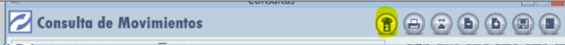
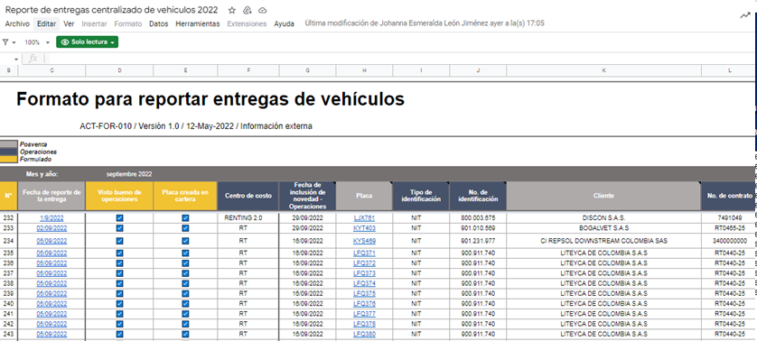
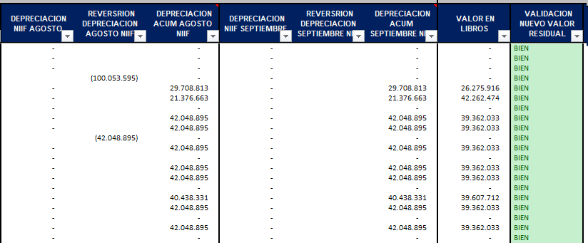
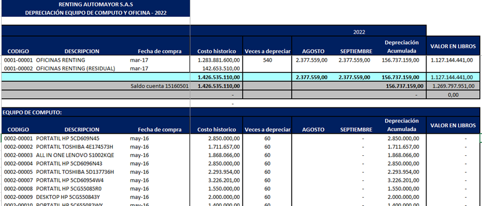
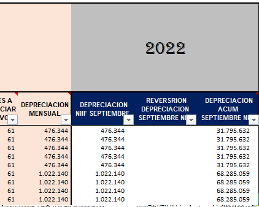
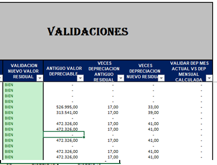
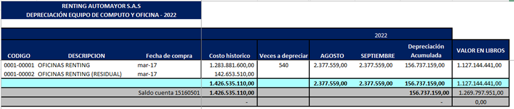

El proceso de depreciacion consiste en reconocer el desgaste y perdida que sufren los activos de la compañia por su uso
INSTRUCTIVO DEPRECIACION Y CONTROL ACTIVIDADES
1. Descargar movimiento de Activaciones y retiros en el mes desde el programa contable (Zeus) y validacion con reporte entregas y venta de vehiculos
Generar y descargar movimiento en excel de las activaciones y retiros de vehiculos registradas en el mes por cada una de las cuentas de Activacion (15400501 vehiculos propios, 15400502 vehiculos restituidos y 15400801 vehiculos colocados), posteriormente validar con informe de entregas del mes (informacion suministrada por el area de operaciones) e informacion de vehiculos vendidos
Paso a paso generacion movimiento en excel
-
Consultas/consulta de movimientos
-
Se digita la informacion a consultar: fecha, marcacion und de negocio,cuentas y desmarcar opcion maximos registros(1024)

-
Se exporta el informe a excel.
 -
Guardar archivo excel en el ordenador
-
Validacion de registros de vehiculos activados en el mes correspondan a los informacion sumnistrada por el area de operaciones
La informacion a validar es la siguiente
- Placa de vehiculo
- Cliente
- Valor de activacion de vehiculos, carrocerias u otros accesorios
- Proveedor compra activo
- Unidad de negocio
Nota: Si se activaron vehiculos, carrocerias u otros accesorios verificar si corresponden a vehiculos entregados en meses anteriores y tener una justificacion que sustente la incorporacion de la misma.
-
Validacion de registros de vehiculos retirados en el mes correspodan y cruce con el movimiento de la cuenta 15400899 venta de activos fijos-vehiculos
la informacion a validar es la siguiente
- El valor de baja del activo sea igual al valor por el que se activo
- Unidad de negocio corresponda a la activacion inicial o su ultima reclasificacion si por alguna eventualidad se llego a presentar
- Si el vehiculo fue retirado se registre de acuerdo a su ultimo estado (propio,restituido o colacado)
2. Relacionar informacion de activaciones y retiros en cuadro de depreciacion
Posteriormente a validacion de informacion registrada de forma adecuada y apropiada de las activaciones y retiros se procede a se relacionada en el cuadro excel de depreciacion contable-vehiculos
La informacion a relacionar es la siguiente
VEHICULOS ACTIVADOS
- Nit - cliente
- Placa
- Descripcion
- Fecha de compra (activacion)
- Unidad de negocio
- Estado de vehiculo
- Valor residual
- Veces a depreciar
- Plazo contrato
(archivo informe relacion activos entregados)
VEHICULOS RETIRADOS
- Incluir fecha de retiro
- Modificar estado del vehiculo retirado
- Ingresar el valor de retiro en la casilla correspondiente
(archivo movimiento cuenta 15400899 venta de activos fijos-vehiculos)
Nota: Si el estado de un vehiculo cambio este debe verse reflejado tanto en contabilidad como en el cuadro de depreciacion
imágenes archivo depreciacion contable vehiculos
3. Validacion reversion de depreciacion de vehiculos vendidos
La depreciacion de los vehiculos que fueron vendidos y se encontraban activados debe ser reversada por el valor acumulado por ende se procede a validar que el registro del mismo seael correspondiente y asi mismo corroborar que el valor acumulado y el saldo en libros sea de $0
4. Calculo depreciacion Vehiculos del mes
En el archivo de depreciacion contable de vehiculos en la columna depreciacion (mes actual) calcular el valor de la depreciacion de los vehiculos que se encuentran activados sin incluir los que se activaron en el mes actual
Observaciones: Los vehiculos que ya fueron retirados no se les debe calcular la depreciacion, el valor depreciado amulado debe ser igual $0

5. Calculo depreciacion otros activos
Abrir el archivo excel 55. Calculo depreciacion otros activos e ingresar los activos nuevos que se compraron en el mes y asi mismo calcular la depreciacion de los otros activos sin incluir los que se activaron en el mes actual o ya fueron depreciados a un 100%

6. Contabilizacion depreciacion por archivo plano
Elaborar archivo plano en excel "Mov a incorporar Zeus Depre" con el calculo de la depreciacion de los dos archivos ( depreciacion contable de vehiculo y 55.calculo
7. Validacion valor en libros de vehiculos
Posteriormente al registro y cargue de archivo plano de depreciacion del mes se procede a validar el valor en libros teniendo en cuenta los siguientes puntos
- Ningun valor en libros de un vehiculo puede ser negativo
- Los vehiculos con estado retirado su valor en libros debe ser igual a 0
- La sumatoria del valor en libros de todos los vehiculos debe ser equivalente al valor de las activaciones ( cuentas 15400501,15400502 y 15400801) menos el valor de la depreciacion acumulada( cuentas 15923501 y 15923502)
- El valor en libros no debe ser inferior al nuevo valor residual
8. Validacion valor mensual y numero de veces depreciado
Verificar y corroborar que el valor depreciado en el mes sea el mismo al valor de depreciacion mensual de todos los meses, si es diferente identificar si corresponde a algun ajuste

Validacion el numero de veces sea un numero entero y que este no sea superior al valor de la columna "veces a depreciar nuevo"

9. Validacion saldos por cuenta y unidad de negocio - Vehiculos
Previamente a la inclusion y relacion de la informacion de los vehiculos activados y depreciacion en el cuadro excel "depreciacion contable de vehiculos" se verifica los saldo de la informacion por cada una de las cuentas contables de activaciones y depreciacion; asi mismo de corrobora los saldos por unidad de negocio con la finalidad de que la informacion cruce.
9.1 Relacionar la informacion de saldos desde Zeus o balance excel definitivo
9.2 Relacionar la segregacion de saldos por unidad de negocio los cuales se toman de los balance definitivos de RT y CCP

10. Validacion saldos activacion y depreciacion- otros activos
Relacionar en el cuadro excel "55.Calculo depreciacion otros activos" los saldos de las cuentas (15160501,15280501, 15240501, 15920501 , 15921501 y 15922001) con el fin de tener el contro de cada uno de estos activos
